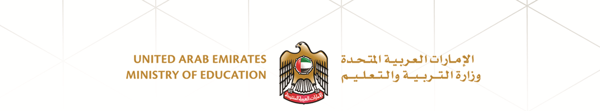
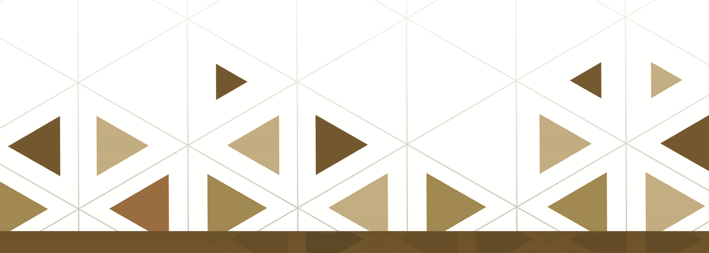

English
خدمات
الإستمارة الخضراء
..
التسلسل الدراسي
معادلة شهادة دراسية
,,
مسيرتنا للخمسين تنطلق من استماراة خضراء لاستدامة التطور ::
في الخدمات والتحول الرقمي

تم التسليم بنحاح
حدث خطأ يرجى ابلاغ المسؤول